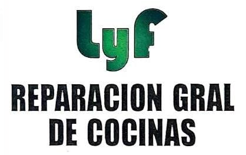
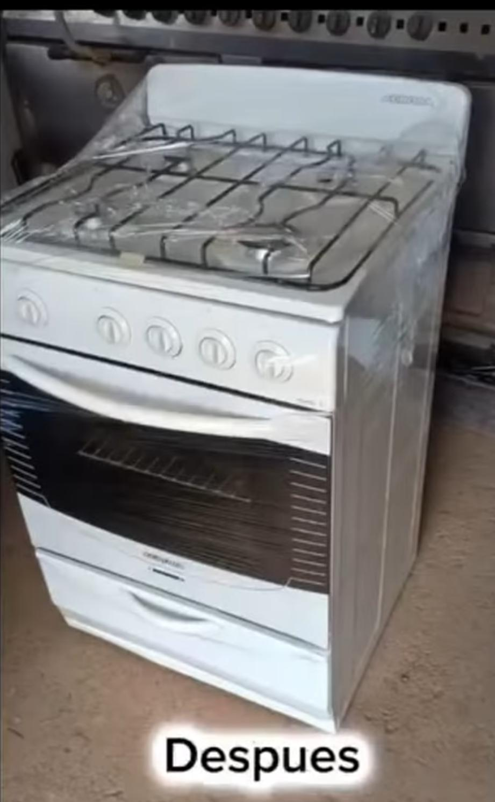
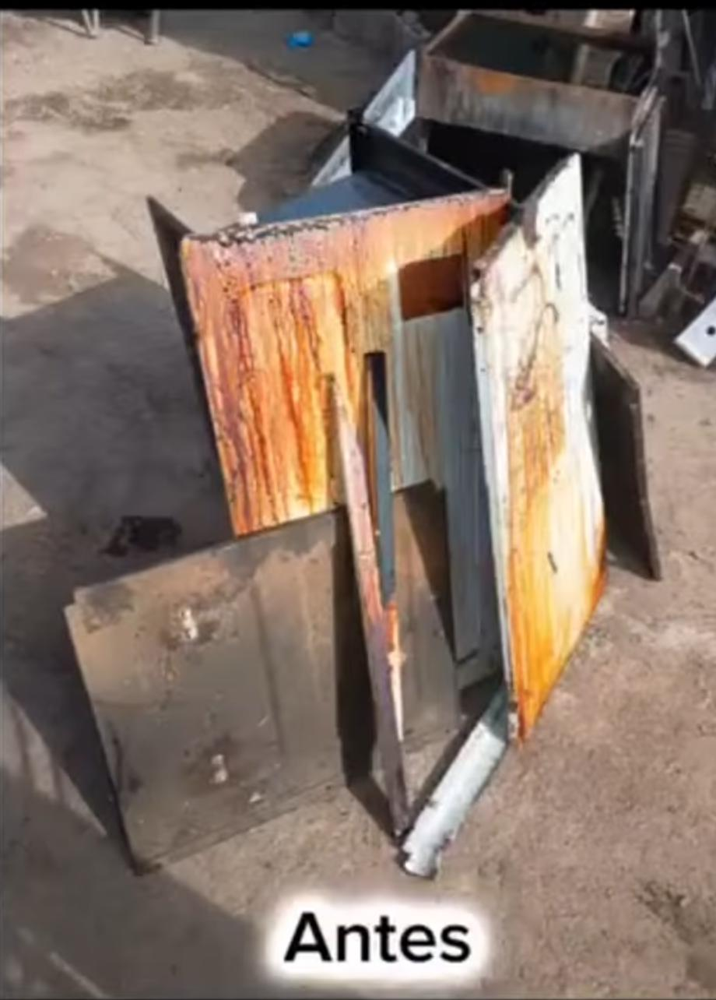
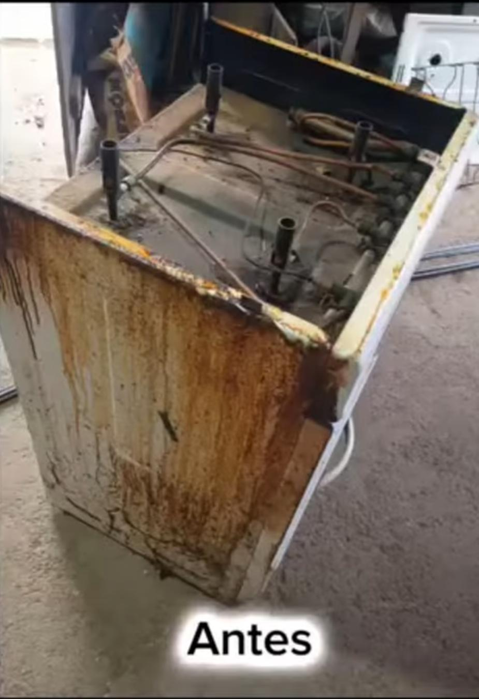
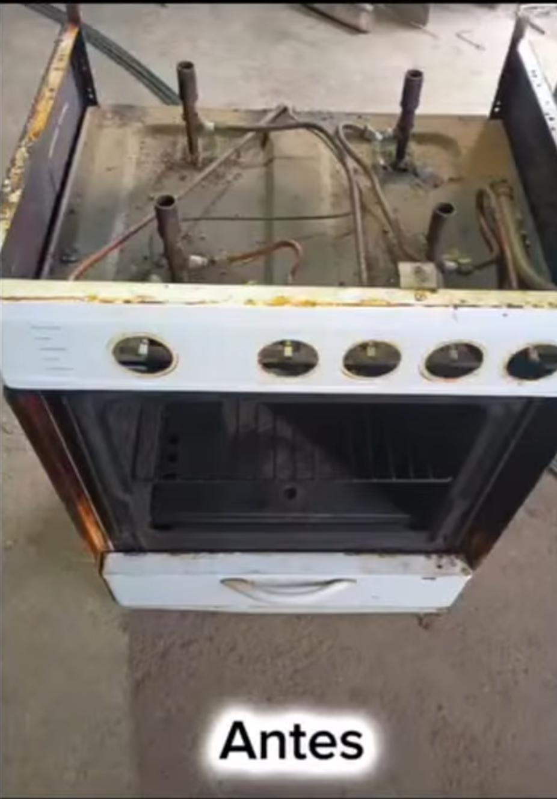
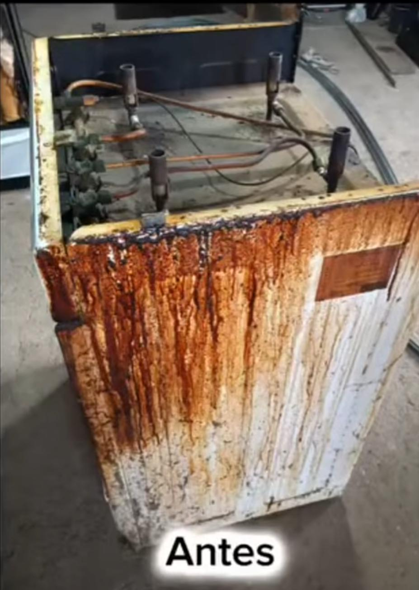
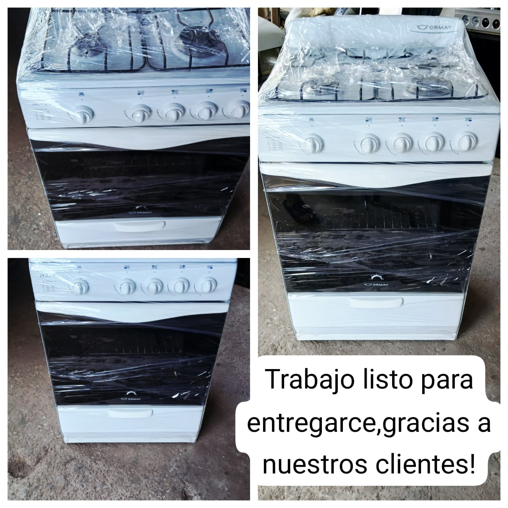
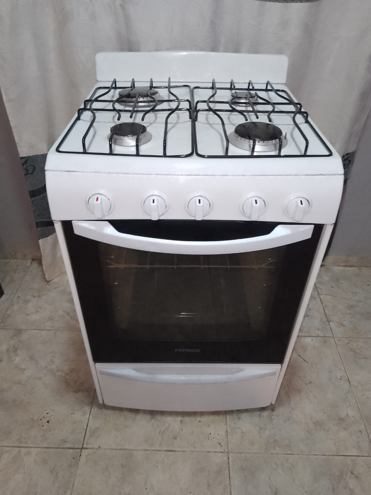
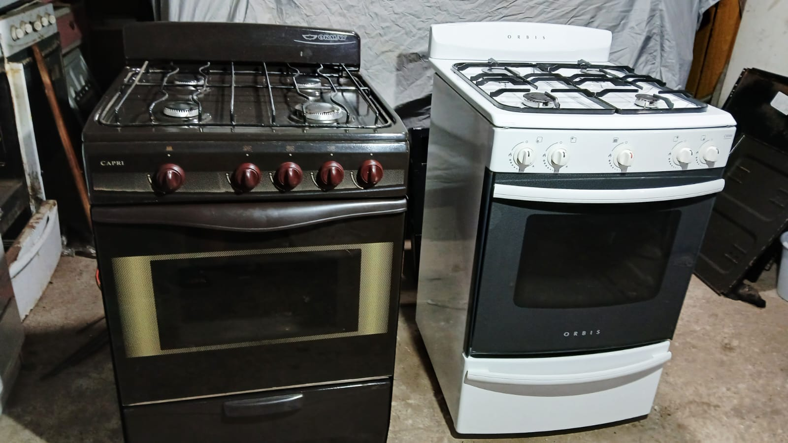

Reparación
Revisamos el equipo y solucionamos las fallas para recuperar su funcionamiento.

Jesús María · Córdoba
Reparación, restauración, puesta a punto, venta e instalación. Trabajo en taller y atención personalizada.

Lo que hacemos
Desde una reparación puntual hasta una restauración completa, buscamos que tu cocina vuelva a funcionar y se vea como corresponde.
Revisamos el equipo y solucionamos las fallas para recuperar su funcionamiento.
Recuperamos cocinas deterioradas y trabajamos sus componentes, estructura y terminación.
Cocinas seleccionadas, revisadas y preparadas para encontrar un nuevo hogar.
Instalación y puesta a punto para que puedas usar tu cocina con tranquilidad.
Trabajos reales
Mostramos el trabajo como realmente es: una cocina deteriorada, un proceso de recuperación y una entrega lista para volver a usar.
Evaluamos el estado general y definimos qué necesita el equipo.
Desarmamos, reparamos, limpiamos y restauramos cada componente necesario.
Realizamos la puesta a punto final y dejamos la cocina lista para entregar.
Caso real
Un ejemplo del trabajo realizado en el taller, desde el estado inicial hasta la terminación.




Catálogo
Consultá por disponibilidad, estado, características y precio. Si una cocina se vende, podemos actualizar su estado en la página.

Disponible
Disponible
DisponibleCapri & Orbis
¿Buscás otra cocina?
Decinos marca, cantidad de hornallas, color o presupuesto y consultamos qué opciones tenemos disponibles.
Por qué LyF
Nos enfocamos en recuperar cocinas y dejarlas listas para seguir funcionando. Cada equipo se evalúa según su estado y necesidad.
Realizamos el proceso de recuperación y puesta a punto de forma ordenada.
Podés consultarnos directamente y mostrar el problema con fotos por WhatsApp.
Servicio pensado para clientes de Jesús María y localidades cercanas.
Mostramos trabajos reales para que puedas conocer nuestro resultado.
Hablemos
Mandanos una foto, contanos qué problema tiene y consultá por reparación, restauración o disponibilidad.
WhatsApp · Consultar ahora ↗